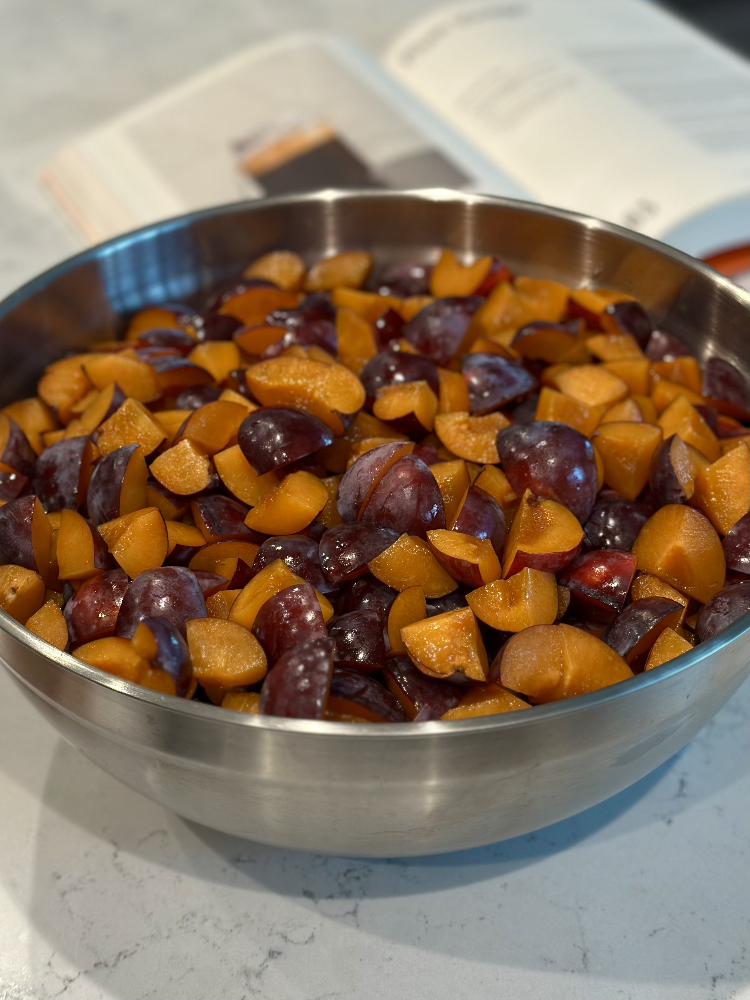
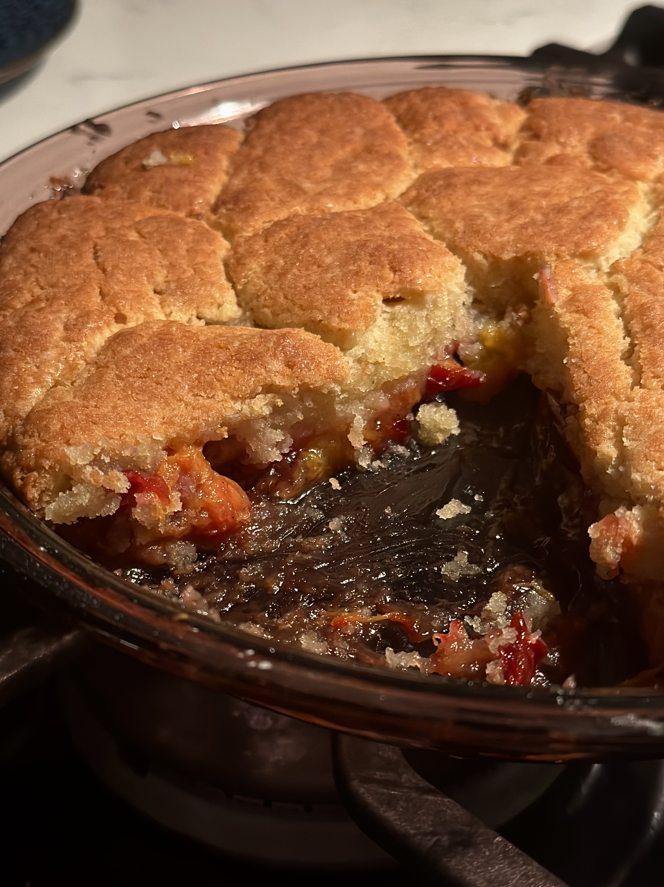
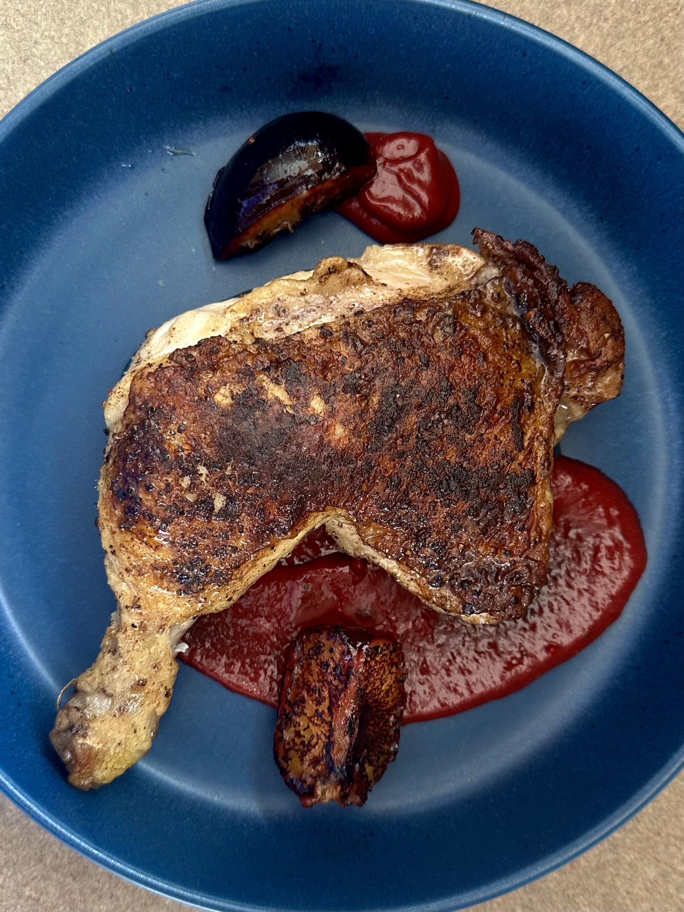
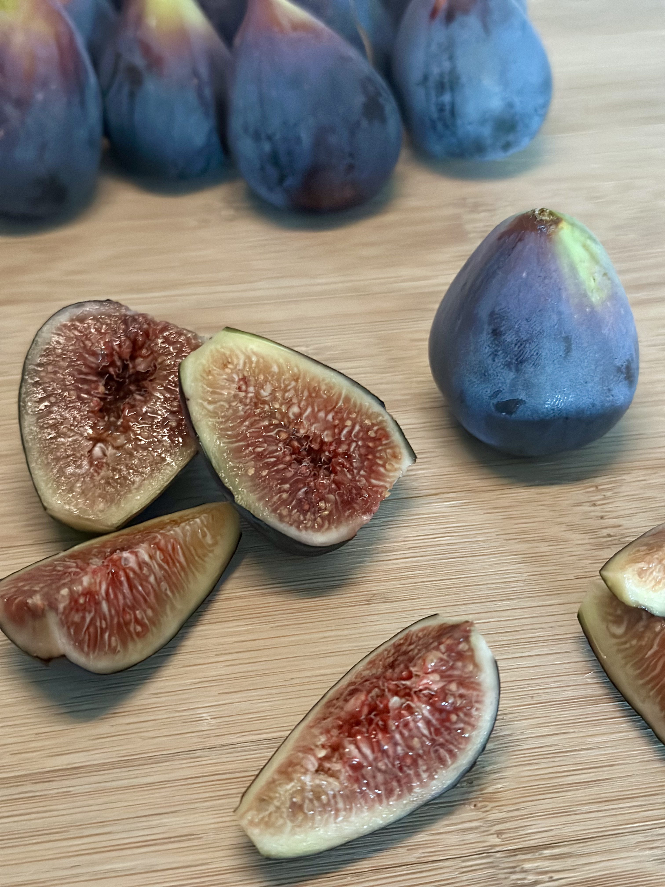

Santa Rosa plums.

Chopped plums.

Spiced plums.

Plum cobbler.

Chicken leg served with plum and sage sauce and charred plums.
Overview
What are plums?
Plums are stone fruits belonging to the genus Prunus, the same group of plants that includes peaches, cherries, apricots, and almonds. The fruits have a thin skin surrounding soft flesh and a hard central stone, or pit, containing the seed. Many different species are called plums, but two of the most important cultivated groups are European plums (Prunus domestica) and Japanese plums (Prunus salicina).
Origin and History
Plums have been cultivated for millennia and have a complex history involving several species from different parts of the world. European or common plums originated in southwestern Asia and later became widely cultivated in Europe and elsewhere. Other plum species developed and were cultivated independently in Asia and North America, meaning that the name "plum" refers to a broader group of related fruits rather than a single species with one geographic origin.
Japanese plums, despite their name, originated in China before being introduced to Japan, where they were cultivated and further developed. They were later introduced to the United States, and extensive breeding produced many of the Japanese-type plums grown today. European and Japanese plums eventually became the two most commercially important groups of cultivated plums.
Appearance and Flavor
Plums vary considerably in size, shape, color, and flavor. Depending on the variety, their skin may be green, yellow, red, purple, or nearly black, while the flesh can range from pale yellow to deep red. Their flavor also varies from very sweet to noticeably tart. As plums ripen, their flesh generally becomes softer and juicier and their sweetness becomes more pronounced.
European and Japanese Plums
Most cultivated plums can be divided into two broad categories: European plums and Japanese plums. European plums are often oval-shaped and include many varieties grown for drying into prunes. Japanese plums and their hybrids tend to ripen earlier and include many of the round, juicy plums commonly sold for eating fresh. Japanese plums also generally require fewer winter chilling hours than European varieties.
Common Varieties
There are numerous plum varieties with distinct colors, flavors, and growing seasons. Santa Rosa is a Japanese-type plum with purple skin and amber flesh, while Shiro has light green-yellow skin and yellow flesh. Other Japanese varieties include Beauty, El Dorado, and Wickson. European varieties include Damson, Green Gage, Italian Prune, and French Prune plums.
Seasonality and Storage
Plum season varies considerably by variety and growing region. In California, different varieties may be harvested from approximately June through October, with Japanese plums generally ripening earlier than European varieties. Plums can continue ripening after harvest and may be kept at room temperature until ripe. Once ripe, refrigeration slows further ripening and deterioration. For longer preservation, plums can also be dried, canned, or frozen.
Uses
- Eat them raw. Of course, plums can be eaten as is or sliced over yogurt, oatmeal, salads, and other dishes. They are tart and sweet and can be very juicy when ripe.
- Bake with them. Their sweet-tart flavor works well in cakes, tarts, galettes, cobblers, and other baked desserts.
- Make jams and preserves. Plums soften easily when cooked and can be turned into jams, preserves, compotes, and fruit butters.
- Cook into sauces and glazes. Make plums into sweet or savory sauces for meats, vegetables, desserts, or other dishes.
- Make syrups. Plum syrup can be used in drinks, desserts, ice cream, or anywhere you want to add concentrated plum flavor.
- Ferment them. Plums can be lacto-fermented to give a pronounced sweet-sour flavor, fermented into alcoholic beverages, or used to make plum vinegar.
- Dry them. Dried plums, also called prunes, become dense, sweet, and chewy and can be eaten alone or used in cooking and baking.
- Roast or grill them. Heat softens the fruit and concentrates its sweetness, making cooked plums useful alongside both desserts and savory foods.
See Also

Figs Fruit Syrup
Fruit Syrup
References
-
Faust, Miklos, and Dezso Suranyi. “Origin and Dissemination of Plums.” Horticultural Reviews, 1997. USDA Agricultural Research Service, ars.usda.gov/research/publications/publication/?seqNo115=83320. Accessed 28 Aug. 2026.
Used primarily for information about the origins, domestication, and historical spread of cultivated plums. This publication also examines archaeological and historical evidence surrounding plum cultivation and the development and distribution of different plum species. -
“Harvesting and Storing Plums and Prunes.” UC Statewide Integrated Pest Management Program, University of California Agriculture and Natural Resources, ipm.ucanr.edu/home-and-landscape/harvesting-and-storing-plums-and-prunes. Accessed 26 Aug. 2026.
Used for information about plum harvesting, ripening, seasonality, and storage. This resource also provides guidance for determining when plums are ready to harvest and how to store and preserve them after picking. -
Okie, William R. “Prunus domestica—European Plum/Prunus salicina—Japanese Plum.” Encyclopedia of Fruits and Nuts, edited by Jules Janick and Robert E. Paull, CABI, 2008, pp. 694-705. USDA Agricultural Research Service, ars.usda.gov/research/publications/publication/?seqNo115=154367. Accessed 28 Aug. 2026.
Used for information about European and Japanese plums, including their origins, characteristics, and differences. This publication also provides a more detailed overview of plum cultivation, breeding, varieties, and their development as important fruit crops. -
“Plums.” UC Master Gardeners of Humboldt and Del Norte Counties, University of California Agriculture and Natural Resources, ucanr.edu/site/uc-master-gardeners-humboldt-del-norte-counties/plums. Accessed 26 Aug. 2026.
Used for information about common plum varieties and the characteristics of European and Japanese plums. This resource also provides information about growing plum trees, including climate requirements, pollination, pruning, and common problems.